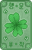
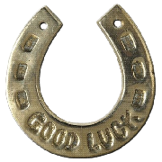
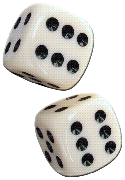
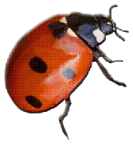
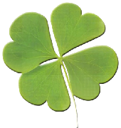
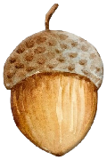
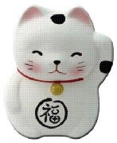
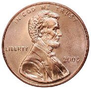
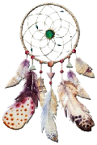

May fortune smile upon you









A good luck charm is an amulet or other item that is believed to bring good luck. Almost any object can be used as a charm. Coins, horseshoes and buttons are examples, as are small objects given as gifts, due to the favorable associations they make. Many souvenir shops have a range of tiny items that may be used as good luck charms. Good luck charms are often worn on the body, but not necessarily (Source: Wikidepia)
Try your luck today